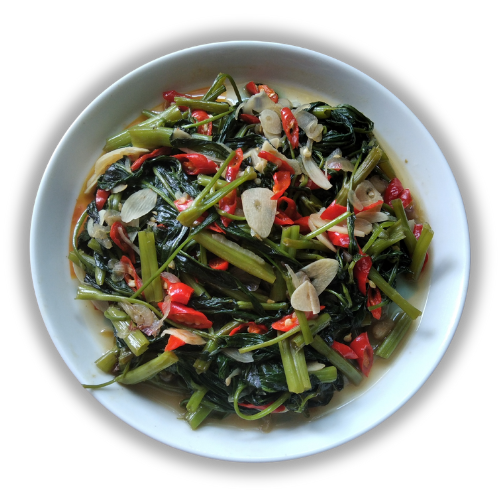

Beranda
Tentang Kami
Resep
Tumis Kangkung

Bahan dan Alat:
1 ikat kangkung
3 siung bawang merah
2 siung bawang putih
3 buah cabai rawit
1 sdt garam
1/2 sdt gula pasir
1 sdm saos tiram
1 sdm minyak goreng
50 ml air
Cara Membuat:
Potong kangkung, cuci hingga bersih dengan air mengalir, lalu tiriskan.
Iris tipis bawang merah, bawang putih. Potong serong cabai rawit.
Panaskan minyak, tumis bawang merah dan bawang putih hingga harum. Lalu, tambahkan cabai dan tumis sebentar.
Masukkan kangkung dan tambahkan air, tunggu hingga kangkung sedikit lunak.
Tambahkan garam, gula, dan saus tiram. Aduk Hingga tercampur rata.
Tumis kangkung siap disajikan.